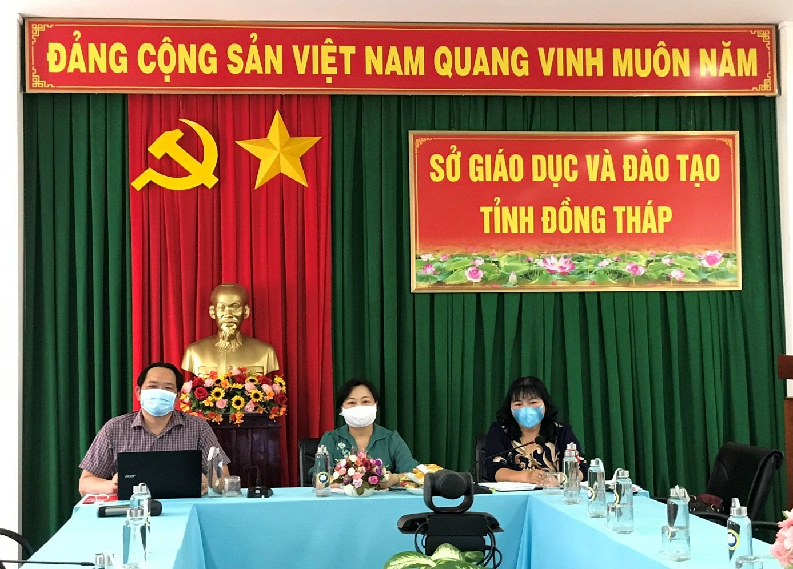
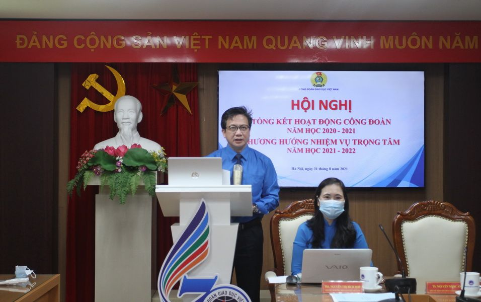

Công đoàn Giáo dục tỉnh Đồng Tháp tiếp tục vinh dự nhận Cờ thi đua của Công đoàn Giáo dục Việt Nam
Chiều ngày 31 tháng 8 năm 2021, tại thủ đô Hà Nội, Công đoàn Giáo dục Việt Nam phối hợp tổ chức Hội nghị trực tuyến tổng kết hoạt động Công đoàn năm học 2020-2021 và triển khai phương hướng nhiệm vụ năm học 2021-2022 theo hình thức trực tuyến tại gần 200 điểm cầu trên cả nước.
Đến dự Hội nghị tại điểm cầu chính có bà Vũ Thị Giáng Hương, quyền Trưởng ban Tuyên giáo Nữ công Tổng LĐLĐ Việt Nam cùng đại diện các Ban của TLĐ, các Vụ của Bộ GDĐT, Thường trực và các Ban chuyên đề CĐGD Việt Nam, Lãnh đạo Sở GDĐT, các trường Đại học, học viện trong cả nước. Do là tỉnh đang thực hiện giãn cách xã hội theo Chỉ thị 16 của Thủ tướng Chính phủ nên tại điểm cầu CĐGD tỉnh Đồng Tháp, tham dự Hội nghị chỉ có đồng chí Nguyễn Thuý Hà, Tỉnh uỷ viên, Giám đốc Sở GDĐT; đồng chí Chiêm Ích Hiệp, Phó Chủ tịch Phụ trách CĐGD Tỉnh; đồng chí Phan Văn Khuyên, UV BTV, Chủ nhiệm UBKT CĐGD Tỉnh.

Quang cảnh Hội nghị tại điểm cầu Đồng Tháp
Tại Hội nghị, các đại biểu được nghe đồng chí Nguyễn Ngọc Ân, Phó Chủ tịch Phụ trách CĐGD Việt Nam báo cáo tóm tắt hoạt động Công đoàn năm học 2020-2021 và xác định nhiệm vụ trong tâm năm học 2021-2022, những kết quả nổi bật được thể hiện qua các hoạt động chào mừng kỷ niệm 70 năm ngày thành lập CĐGD Việt Nam, những hoạt động thiết thực hướng đến việc “nâng cao năng lực ứng xử sư phạm, đạo đức nhà giáo, người lao động, đáp ứng yêu cầu nhiệm vụ trong tình hình mới”, nâng cao chất lượng các phong trào thi đua “Dạy tốt - Học tốt”, thi đua “Đổi mới, sáng tạo trong dạy và học” với nội hàm mới “Đổi mới, sáng tạo trong quản lý, giảng dạy và học tập”, “Lao động giỏi, Lao động sáng tạo”, “Đổi mới, sáng tạo, hiệu quả trong hoạt động của tổ chức công đoàn”, cuộc vận động “Cán bộ, công chức, viên chức nói không với tiêu cực”; các giải pháp xây dựng “Trường học hạnh phúc” ngày càng hiệu quả; công tác hỗ trợ giáo viên nâng cao chất lượng giảng dạy, nhất là dạy học trực tuyến; động viên nhà giáo tích cực tự học, tự nghiên cứu, bồi dưỡng nâng cao năng lực; công tác phòng chống dịch Covid-19, nhất là hỗ trợ đoàn viên công đoàn có hoàn cảnh khó khăn trong giai đoạn bị ảnh hưởng từ việc giãn cách xã hội do dich bệnh; hay việc đẩy mạnh ứng dụng công nghệ thông tin, sử dụng mạng xã hội nhằm tạo hiệu ứng trong công tác truyền thông của ngành…Nhìn chung, hoạt động công đoàn ngày càng linh hoạt, sáng tạo, thiết thực, hướng mạnh về cơ sở, tạo hiệu ứng tốt trong từng đơn vị, trong ngành và xã hội. Công tác phối hợp chăm lo cho cán bộ nhà giáo, người lao động được chú trọng; chủ động nắm tâm tư, nguyện vọng, kịp thời động viên, hỗ trợ nhà giáo, người lao động khó khăn trong đời sống, việc làm, bệnh tật, rủi ro, bị ảnh hưởng do dịch bệnh, thiên tai...

Lãnh đạo CĐGD Việt Nam điều hành Hội nghị trực tuyến
Với sự nỗ lực, quyến tâm hoàn thành xuất sắc tất cả các nội dung, chương trình đề ra; đồng thời tham gia tích cực, hiệu quả các hoạt động tập trung, các cuộc thi do CĐGD Việt Nam phát động; CĐGD tỉnh Đồng Tháp tiếp tục vinh dự là 01 trong 06 đơn vị xuất sắc nhận Cờ thi đua của CĐGD Việt Nam trong phong trào thi đua “Đổi mới, sáng tạo trong dạy và học” năm học 2020-2021. Được biết đây là lần thứ 07 liên tiếp trong 5 năm qua (2016-2021) CĐGD tỉnh Đồng Tháp nhận Cờ thi đua của CĐGD Việt Nam về thành tích xuất sắc trong công tác công đoàn hàng năm học, là một trong những đơn vị điển hình tiên tiến tiêu biểu toàn quốc giai đoạn 2015-2020 do CĐGD Việt Nam biểu dương, nhân rộng./.